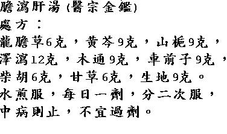

|
Complementary and
Alternative Healing
University
|
|
Premature Ejaculation 早 泄 Edited by : Joe Hing Kwok Chu Causes of premature ejaculation can be any one or combination of the following: 1. Psychological problem: anxiety Therapy: qigong, and/or hypnotherapy and/or psychotherapy. 2. Over sensitivity of the glans of the penis Causes of over sensitivity of the penis: (a) Glans is being covered by the foreskin most of the time. Solution: pushing back or circumcise the foreskin to expose the glans of the penis so that the glans get more contact with the under wears. (b) Infrequence of sexual intercourse. The over sensitivity of the glans will subside over a period of sexual activities. Caution: over use of desensitizing chemical can damage the nerve and causes impotence. 3. weak function of the body: shenxu (kidney deficient) Chinese Herb Therapies For condition of weak function of the body: shenxu (kidney deficient) Formula 1: ginseng (smashed)18 g, shu di huang 18 g, gou qi zi 18 g, sha yuan ji li 11 g , xian ling pi 11 g, ding xiang 11 g, shan yao 18 g, yuan zhi 4 g, chen xiang (smashed) 4 g. Rinse all herb in drinking water. Dry with low heat. Soak in 1,200 c.c. of rice wine for 3 days. Put in sealed ceramic or wine bottles. Put in boiling water for 3 hours. Bury them in the ground for a day before use. Drink 30 c.c. after supper or before bed. Calm down and sip it very slowly e.g. hundreds of small portions. Warning: Avoid using wine or any alcohol if you have liver problem or with family history of cancer, or any condition that should avoid alcohol. Young patients or those with yin deficient and/or liver overactive do not use this formula. Source of formula: Nian Xi Yao (Qing Dynasty), Book of Ji Yan Liang Fang. 早 泄 藥 酒 方 ﹕
腎 虛處 方 : 五錢, 遠志 一錢, 沈香 一錢 , 荔 枝 肉 7 枚 。 搗碎。 各 藥 用 冷 開 水 沖 淨 。 烘 乾 後 加 米酒 二 斤 ， 浸泡三日 後 ， 密 封 ， 入 水 中 煮 三 小 時 ， 埋 入 土 中 一 晝 夜 ， 以 去 火 氣。 每 天 睡 前 或 晚 飯 後 ， 飲 一 小 杯 。 分 幾 百 口 ， 慢 慢 飲 之 。 不 可 一 口 氣 喝 完 。 原 方 教 人 分 一 千 口 飲 。 不 然 可 能 飲 酒成壞 習 慣 ， 弄 巧 反 拙 。 注 意 ﹕ 如 有 肝 病 或 癌 病 或 有 任 何 須 避 酒 之 病 症 ， 不 可用 藥 酒 方 。 青 年 ， 壯 年 或 陰 虛 ， 肝 旺 者 不 可 服 此 方 。 處 方 來 源 ﹕ 清 ， 年 希 堯 <集 驗 良 方 > 舊 制 ﹕ 一 錢 = 3.75 克 。 據 說 當 代 名 中 醫 吳 棹 仙 在 1935 年 前 後 辦 "國 醫 藥 館 "時 曾 將 方 中 的 熟 地 黃 和 荔 枝 肉 改 為 生 地 黃 和 荔 枝 核 。 吳 先 生 服 此 酒 後 受 益 很 多 。 將 此 方 編 為 歌 訣 ， 以 傳 後 人 ﹕ 杞 地 人 參 各五 錢 ， 羊 藿 沙 菀 母 丁 三 ， 一 沉 遠 志 荔 枝 七 ， 千 口 一 杯 飲 何 歡 。 生 地 即 干 生 地 黃 。 羊 藿 即 淫 羊 藿 亦 叫 仙 靈 脾 。 母 丁 即 母 丁 香 亦 叫 丁 香 。 Formula 2: Weak function of the body, shenxu (kidney deficient) Prescription﹕ tu ji san (source Dong Xuan Zi) rou cong rong 10 g, she chuang zi 10 g, yuan zhi 5 g, wu wei zi 10 g, tu si zi 8 g. Boil with 300 c. c. of water and simmer till one bowl. Make into 3 servings per day. For shenyangxu (kidney yang deficiency) condition, add﹕ rou gui 5 g, fu zi 7 g, lu rong 1 g, ba ji tian 10 g, zi che he 10 g, dong chong xia cao 5 g. For shenyinxu (kidney yin deficiency) condition: Add﹕ shu di huang 10 g, gui ban 10 g, zhi mu 10 g, huang bai 10 g, ru zhen zi 10 g, han lian cao 15 g. 腎虛 型 處 方 ﹕ 禿雞散《洞玄子方 》 治 陽痿早洩肉蓯蓉10 克 、蛇床子10克 、遠志5克 、 五味子10 克 、菟蕬子8克 腎 陽 虛 加 ﹕ 肉桂5克 、附子7克 、鹿茸1克 、 巴戟天10克 、紫河車10克 、冬蟲夏草5克 腎 陰 虛 加 ﹕ 熟地10克 、龜板10克 、知母10克 、 黃柏10克 、女貞子10克 、旱蓮草15克 For condition systemic fungal infection:Prescription: long dan xie gan tangIngredients: long dan cao 6 g, huang qin 9 g, shan zhi 9 g, ze xie 12 g, mu tong 9 g, che qian zi 9 g, chai hu 6 g, gan cao 6 g, sheng di 9 g. Boil with water. One package a day. Make into two serving. Stop taking when symptoms subside. Do not take it for long time. Warning: This formula can be toxic to the kidneys because of the herb mu tong. There are different varieties of mu tong in the market. Before the Qing dynasty, however, it was not toxic because mu tong was derived from either the plant of Akebia guinata or the plant Akebia lobata. Today, ninety five percent of mu tong (guan mu tong 關木通) used in China is from the stem of Aristolochia debilis, a toxic plant usually grown in the northeastern provinces of China, formally called Manchuria. Only rarely in a few localities in China, is mu tong obtained from Akebia guinata or Akebia lobata being used. Today in China, all manufactured formulae that contain guan mu tong (aristolochia debilis) are being banned because of the toxicity to the kidneys.
濕熱下注型 處 方 ﹕龍膽瀉肝湯加減
 注意﹕ 木通有幾種。現在市場上賣的 95% 是關木通﹔屬于 馬兜鈴科﹐對腎臟有毒。凡含有關木通的成藥將被禁賣。
Symptoms: chronic chest pain, head aches. The pain feels as if pricking with needles and with fixed location, endless hiccup, anxiety, depression, or uneaseness, palpitation, insomnia, fit of temper, mild fever gradually appears at dusk, dark red tongue with bruise mark, dark lips or dark eyes, uneven pulse or tight, tense pulse. Prescription: dang gui 9 g, chuan xiong 5 g, chi shao yao 9 g, tao ren 12 g, hong hua 9 g, niu xi 9 g, chai hu 3 g, jie geng 5 g, zhi ke 6 g, sheng di huang 9 g, gan cao 3 g. Boil with 500 c.c. of water. Simmer till 200 c.c. Make into 3 servings per day. Warning: do not use this formula if the syndromes of blood stasis is not obvious. 瘀血阻絡型 處 方 ﹕血府逐瘀湯加減 當 歸 9 克 ， 川 芎 5克 ， 赤 芍 9克 ， 桃 仁 12克 ， 紅 花 9克 ， 牛 膝 9克 ， 柴 胡 3克 ， 桔 梗 5克 ， 枳 殼 6克 ， 生 地 9克 ， 甘 草 3克 。 加 水 500 cc， 煎 至 200cc， 一 日 分 三 次 溫 服 。 注 意 ﹕ 如 血 瘀 症 狀 不 明 顯 ， 不 可 用 本 方 。
肝氣鬱結型 精 神 抑 鬱 ， 胸 脅 作 脹 ， 或 脘 痞 ， 噯 氣 頻 作 ， 善 嘆 息 ， 舌 苔 薄 白 ， 脈 弦 。 處 方 ﹕ 柴胡舒肝湯加減 或用逍遥散加减：当归、白芍、柴胡、白术、 茯苓、枳壳、木香、佛手、佩兰各10克、白蔻 仁、甘草各6克、丝瓜络15克。 水煎服。
心脾勞傷型 處 方 ﹕歸脾湯加減
See Qigong Therapy See Acupuncture Therapy for impotence. Back to Sexual Dysfunction Page
|